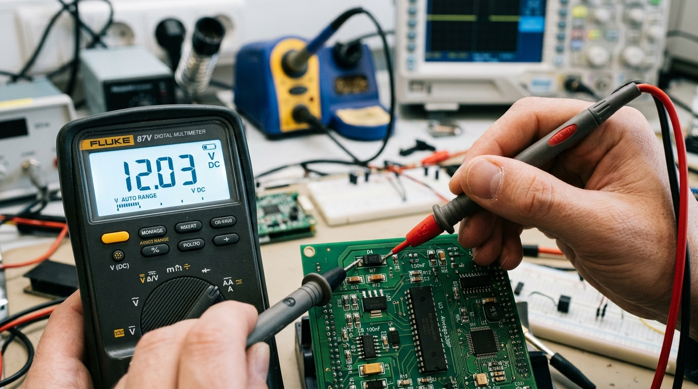
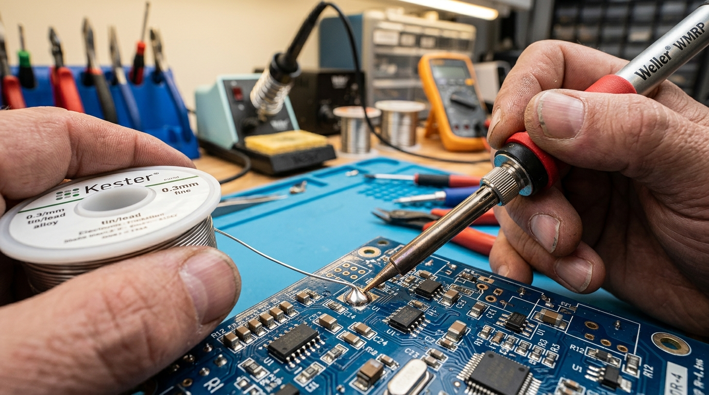
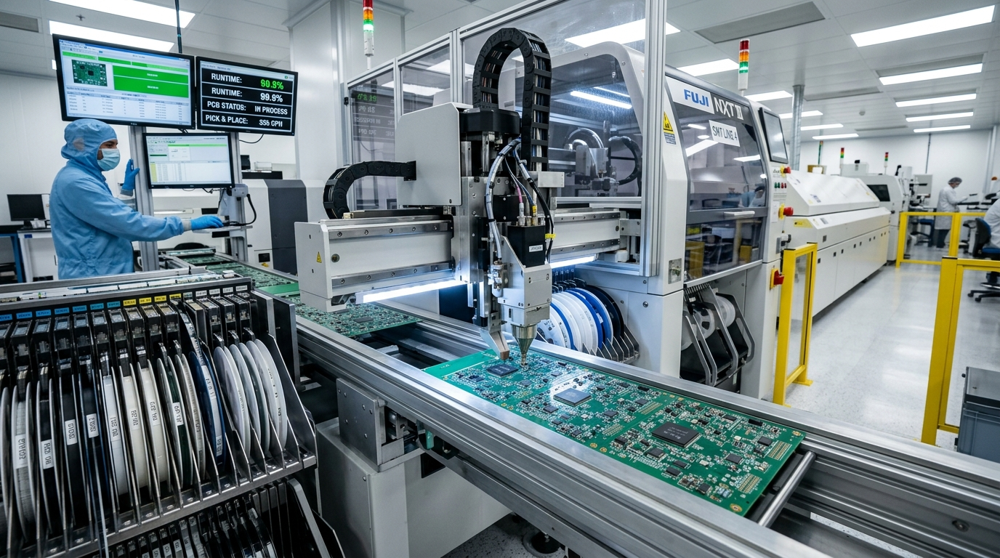

1. Nguyên Lý Mạch Điện Tử Căn Bản & Các Đại Lượng Đo
Để bắt đầu tự tay tạo ra các thiết bị IoT thông minh, trước hết bạn cần nắm vững ba đại lượng vật lý căn bản chi phối toàn bộ thế giới phần cứng:
1.1. Tam giác Định luật Ohm
Định luật Ohm thiết lập mối tương quan giữa Điện áp (V), Dòng điện (I) và Điện trở (R):
| Đại lượng | Ký hiệu & Đơn vị | Công thức tính | Ý nghĩa kỹ thuật thực tế |
|---|---|---|---|
| Điện áp (Voltage) | V hoặc U (Volt - V) | V = I × R |
Chênh lệch thế năng đẩy các hạt electron chuyển động. Nguồn phổ biến: 3.3V (Logic chip), 5V (USB), 12V/24V (Công nghiệp). |
| Dòng điện (Current) | I (Ampere - A, mA) | I = V / R |
Lượng hạt điện tích chạy qua tiết diện dây dẫn trong một đơn vị thời gian. 1A = 1000mA. |
| Điện trở (Resistance) | R (Ohm - Ω, kΩ, MΩ) | R = V / I |
Khả năng cản trở dòng điện của vật liệu. 1kΩ = 1000Ω. |
| Công suất (Power) | P (Watt - W, mW) | P = V × I = I² × R |
Năng lượng tiêu thụ biến đổi thành nhiệt năng hoặc cơ năng. Giúp chọn công suất chịu nhiệt của điện trở (1/8W, 1/4W, 1W). |

1.3. Phương Pháp Đo Đạc & Kiểm Thử Mạch Bằng Đồng Hồ Vạn Năng (DMM)
Đồng hồ vạn năng (Digital Multimeter) là "con mắt" của kỹ sư phần cứng. Trước khi bật nguồn bất kỳ mạch điện tự lắp ráp nào, hãy tuân thủ nghiêm ngặt quy trình kiểm tra an toàn sau:
1. Đo thông mạch & Chống chập (Continuity Test)
Vặn núm xoay về biểu tượng còi/sóng âm. Chạm 2 que đo vào nhau để nghe tiếng bíp xác nhận. Đặt 1 que vào chân VCC (5V/3.3V) và 1 que vào GND:
- Nếu kêu "BÍP" liên tục hoặc điện trở ≈ 0Ω: Mạch đang bị chập âm dương (Short Circuit)! Tuyệt đối KHÔNG cắm điện, phải dò lại các mối hàn hoặc chân cắm.
- Nếu màn hình hiện "OL" (Over Load) hoặc hàng MΩ: Đường nguồn an toàn, không có nguy cơ nổ linh kiện.
2. Đo điện áp một chiều (DC Voltage Test)
Chuyển sang nấc V⎓ (DC). Que đen cắm cổng COM kẹp vào chân GND, que đỏ đo lần lượt các điểm nguồn trên mạch:
- Chân đầu ra USB:
4.85V - 5.15V. - Chân đầu ra IC hạ áp LDO (AMS1117):
3.28V - 3.32V(Chuẩn logic cho ESP32/STM32). - Nếu điện áp sụt xuống dưới 2.8V: Nguồn quá tải hoặc chip vi điều khiển đang nóng do ngắn mạch bên trong.
1.4. Bảng tra cứu mã vạch màu điện trở & Mã trở dán SMD
Quy chuẩn đọc nhanh giá trị điện trở trong phòng thí nghiệm:
| Vạch màu | Giá trị số (Vạch 1 & 2) | Hệ số nhân (Vạch 3) | Ví dụ thực tế điện trở cắm THM | Quy đổi mã dán SMD (0805/0603) |
|---|---|---|---|---|
| Nâu - Đen - Đỏ | 1 - 0 | × 100 | 10 × 100 = 1,000Ω = 1kΩ |
Mã in 102 (10 + 2 số 0) |
| Vàng - Tím - Đỏ | 4 - 7 | × 100 | 47 × 100 = 4,700Ω = 4.7kΩ (Trở kéo I2C) |
Mã in 472 (47 + 2 số 0) |
| Nâu - Đen - Cam | 1 - 0 | × 1,000 | 10 × 1,000 = 10,000Ω = 10kΩ (Trở kéo nút nhấn) |
Mã in 103 (10 + 3 số 0) |
| Đỏ - Đỏ - Nâu | 2 - 2 | × 10 | 22 × 10 = 220Ω (Hạn dòng LED báo nguồn) |
Mã in 221 (22 + 1 số 0) |
2. Phân Tích Chuyên Sâu Các Dòng Linh Kiện Điện Tử
2.1. Nhóm linh kiện thụ động (Passive Components)
- Điện trở (Resistor): Hạn dòng, định thiên phân áp, kéo trở nguồn (Pull-up/Pull-down) để chống nhiễu chân tín hiệu Input.
- Tụ điện (Capacitor):
- Tụ gốm (Ceramic 100nF - 0.1uF): Lọc nhiễu tần số cao, luôn đặt sát chân cấp nguồn VCC của vi điều khiển.
- Tụ hóa (Electrolytic 100uF - 1000uF): Có cực tính (+/-), lọc phẳng gợn sóng điện áp DC sau khi chỉnh lưu nguồn.
- Cuộn cảm (Inductor) & Hạt Ferrite Bead: Lọc nhiễu dải tần radio, dùng trong các mạch nguồn xung DC-DC Buck/Boost chuyển đổi hiệu suất cao.
2.2. Nhóm linh kiện tích cực (Active Components)
- Diode: Cho dòng điện đi qua theo 1 chiều duy nhất từ Anode (A) sang Cathode (K). Diode Schottky (1N5819, SS34) có sụt áp thấp (~0.3V), tốc độ đóng cắt siêu nhanh dùng chống cắm ngược cực nguồn.
- Transistor BJT (2N2222, 2N3904 - NPN): Dùng dòng điện cực gốc Ib siêu nhỏ để điều khiển dòng lớn Ic qua tải (đóng ngắt còi buzzer, đèn công suất).
- MOSFET (IRFZ44N, AO3400 - N-Channel): Điều khiển bằng điện áp cực cổng Vgs, nội trở bật Rds(on) siêu nhỏ (chỉ vài mili-ohm) giúp điều khiển động cơ DC, van điện từ và sưởi nhiệt không bị nóng.
- IC Ổn áp tuyến tính (LDO): Chuyển đổi điện áp ổn định (AMS1117-3.3V cấp cho ESP32, LM7805 cấp nguồn 5V).
3. Kỹ Năng Cắm Mạch Thử Nghiệm Trên Breadboard (Test Board)
Breadboard là công cụ tạo mẫu nhanh không thể thiếu trước khi tiến hành vẽ mạch in PCB chính thức.
3.1. Cấu trúc đường ray điện bên trong Breadboard
- 2 Dải nguồn dọc hai mép ngoài (+ và -): Các lỗ kết nối liền nhau theo chiều dọc toàn bộ chiều dài bảng. Dùng làm đường dẫn nguồn chính VCC và đường nối đất GND.
- Các hàng 5 lỗ nằm ngang ở giữa (A-B-C-D-E và F-G-H-I-J): Nối liền nhau theo từng hàng ngang 5 chân. Giữa hàng E và hàng F có rãnh cách điện chuẩn 0.3 inch, vừa vặn để cắm các IC chân cắm DIP-8, DIP-16 hoặc bo mạch Arduino Nano/ESP32.

3.2. Hướng Dẫn Thao Tác Cắm Bo Mạch & Chống Nhiễu Thực Tế
Khi ráp mạch phức tạp gồm vi điều khiển và nhiều module cảm biến trên Breadboard, bạn hãy áp dụng các nguyên tắc chuyên nghiệp sau:
1. Cắm IC vi điều khiển bắc qua rãnh giữa
Luôn cắm bo mạch ESP32 hoặc Arduino Nano nằm chính giữa rãnh cách điện. Nếu breadboard hẹp không đủ cắm dây 2 bên, hãy ghép 2 chiếc breadboard lại với nhau hoặc nối dây jumper từ chân bên dưới trước khi ấn chặt bo mạch xuống.
2. Tụ gốm khử nhiễu nguồn (Decoupling)
ESP32 khi bật sóng WiFi/Bluetooth tiêu thụ dòng đột biến lên đến 250mA - 400mA, gây sụt áp tạm thời (Brownout Reset). Hãy cắm 1 tụ gốm 100nF (mã 104) song song với 1 tụ hóa 100uF - 470uF sát chân VCC và GND của bo mạch để ổn định nguồn.
• Dây Đỏ: Luôn dành cho nguồn dương (VCC / 5V / 3.3V).
• Dây Đen hoặc Xanh đậm: Luôn dành cho đường đất âm (GND).
• Dây Vàng / Xanh lá / Trắng: Dành cho đường tín hiệu truyền dữ liệu (Data, TX/RX, SDA/SCL).
👉 Tuyệt đối không dùng dây đen nối nguồn dương hoặc dây đỏ nối mass, tránh nhầm lẫn gây cháy bo mạch khi mở rộng hệ thống.
4. Kỹ Thuật Hàn Mạch Điện Tử Chuyên Nghiệp (Hand Soldering)
Một mối hàn chất lượng cao quyết định đến 90% sự ổn định của thiết bị khi hoạt động trong môi trường rung lắc hoặc nhiệt độ cao.
4.1. Chuẩn bị trang thiết bị chuẩn
- Mỏ hàn điều chỉnh nhiệt độ (T12, T245, TS100): Cài đặt dải nhiệt tối ưu từ 300°C - 330°C đối với thiếc có chì (Sn63/Pb37) và 340°C - 360°C đối với thiếc không chì (Lead-free SAC305).
- Dây thiếc hàn chất lượng: Lõi có sẵn nhựa thông hoạt tính (Rosin Core Flux 2% - 2.5%) giúp làm sạch màng oxit kim loại khi nóng chảy.
- Dụng cụ vệ sinh mũi hàn: Búi kim loại đồng thau (brass wool) giúp làm sạch mũi hàn mà không làm tụt nhiệt độ như bọt biển ướt.
4.2. Quy trình hàn 4 bước vàng:
- Làm sạch và tráng thiếc: Quệt mũi mỏ hàn vào búi đồng, tráng một lớp thiếc mỏng bảo vệ đầu mũi.
- Gia nhiệt đồng thời: Đặt đầu mũi mỏ hàn tiếp xúc đồng thời vào cả chân linh kiện và pad đồng trên PCB trong khoảng 1.5 - 2 giây.
- Đưa thiếc vào: Đưa dây thiếc vào điểm tiếp xúc đối diện mũi mỏ hàn. Khi nhiệt độ đủ, thiếc sẽ tự động nóng chảy, lan tỏa đều và bám chặt vào pad đồng.
- Rút thiếc và nhấc mỏ hàn: Rút dây thiếc ra trước, giữ mỏ hàn thêm 0.5 giây để thiếc bóng láng, sau đó nhấc mỏ hàn theo góc 45 độ dứt khoát.

4.3. Kỹ Thuật Hàn Linh Kiện Dán SMD Thủ Công (Drag Soldering)
Để hàn các chip dán chân nhỏ như STM32, ESP32, IC nguồn SOIC-8 hoặc QFP-48 mà không cần máy hàn tự động, kỹ sư thực hiện kỹ thuật hàn kéo (Drag Soldering) với 3 bước:
1. Cố định chân góc (Tack Solder)
Bôi một ít mỡ hàn (Flux paste) lên pad đồng. Dùng nhíp chống tĩnh điện định vị chip thật thẳng hàng với các đường chân. Chạm nhẹ đầu mỏ hàn có chút thiếc vào 1 chân ở góc đối diện để cố định chip không bị xê dịch.
2. Kéo thiếc lướt qua hàng chân (Drag)
Bôi gel flux phủ đều toàn bộ các chân còn lại. Đưa mỏ hàn lưỡi dao (Knife tip) có ngậm một giọt thiếc nhỏ lướt nhẹ đều tay từ trên xuống dưới. Nhờ có flux, thiếc nóng chảy sẽ tự động bị lực căng bề mặt kéo về từng pad riêng biệt mà không bị dính chùm.
4.4. Bảng phân tích 6 lỗi mối hàn kinh điển & Cách xử lý
| Lỗi thường gặp | Hình thức nhận biết | Nguyên nhân cốt lõi | Biện pháp khắc phục chuẩn |
|---|---|---|---|
| Mối hàn nguội (Cold Joint) | Bề mặt xám đục, sần sùi, dễ bị bong gãy khi lay nhẹ. | Nhiệt độ mỏ hàn quá thấp hoặc rút mỏ hàn quá vội trước khi thiếc nóng chảy hoàn toàn. | Bôi flux, tăng nhiệt độ lên 320°C và gia nhiệt lại trong 2 giây để thiếc tái kết tinh bóng láng. |
| Dính chân chập mạch (Solder Bridge) | Một khối thiếc nối liền giữa 2 hoặc nhiều chân linh kiện cạnh nhau. | Cho quá nhiều thiếc hoặc mũi mỏ hàn quá to đối với bước chân nhỏ. | Dùng dây hút thiếc bện đồng (Solder Wick) thấm đẫm flux, đặt lên mối chập và áp mũi mỏ hàn để hút sạch lượng thiếc thừa. |
| Bong tróc Pad đồng (Lifted Pad) | Vòng đồng trên bo mạch bị bong tách khỏi nền phíp thủy tinh FR4. | Giữ mỏ hàn quá lâu (> 5 giây) hoặc dí lực cơ học tì đè quá mạnh khi hàn. | Không thể dán lại pad; phải cạo nhẹ lớp sơn phủ của đường mạch lân cận và câu dây đồng trần (Enamelled wire) sang chân linh kiện. |
| Linh kiện dựng đứng (Tombstoning) | Trở/tụ dán SMD bị nhấc bổng 1 đầu lên không chạm mạch (giống bia mộ). | Nhiệt phân bố không đều giữa 2 đầu linh kiện trong quá trình hàn. | Dùng mỏ hàn 2 đầu kẹp (SMD Tweezer) hoặc máy khò nhiệt thổi đều hai đầu cùng lúc. |
5. Dây Chuyền Lắp Ráp Linh Kiện Dán SMT & Xuyên Lỗ THM Tại Nhà Máy Luxas
Tại Nhà máy Luxas, quy trình sản xuất bo mạch điện tử PCBA (Printed Circuit Board Assembly) được áp dụng tiêu chuẩn kiểm soát chất lượng nghiêm ngặt theo tiêu chuẩn quốc tế IPC-A-610 Class 2 & Class 3.
5.1. Dây chuyền công nghệ gắn bề mặt tự động (SMT - Surface Mount Technology)
Công nghệ SMT cho phép gắn hàng chục nghìn linh kiện dán siêu nhỏ (từ kích thước 0201, 0402 đến chip vi xử lý BGA hàng trăm chân) lên cả 2 mặt bo mạch với độ chính xác đến từng micro-mét:
In kem hàn (Solder Printing)
Máy in tự động quét lớp kem hàn thiếc qua mặt nạ kim loại Stencil laser bằng lưỡi gạt Squeegee với áp lực chuẩn xác.
Kiểm tra kem hàn 3D (SPI)
Hệ thống quang học quét 3D đo thể tích, chiều cao và độ lệch của lớp kem hàn trước khi sang khâu cắm chíp.
Gắp đặt linh kiện (Pick & Place)
Hệ thống tay gắp chân không tốc độ cao tự động lấy linh kiện từ cuộn feeder và định vị cực nhanh với camera quang học AI.
Lò hàn đối lưu (Reflow Oven)
Bo mạch đi qua lò hàn 10 vùng nhiệt độ được kiểm soát chặt chẽ (Preheat, Soak, Reflow, Cooling) để làm nóng chảy và đông kết thiếc.
Kiểm tra quang học tự động (AOI)
Camera độ phân giải cao đối chiếu sai lệch màu sắc, phát hiện linh kiện bị lệch tâm, ngắn mạch hoặc thiếu chân.

5.3. Bảng Năng Lực Kỹ Thuật Gia Công PCBA Tại Nhà Máy Luxas
Hệ thống máy móc tại Nhà máy Luxas đáp ứng trọn gói từ khâu sản xuất mẫu thử nghiệm nhanh (Rapid Prototyping) đến sản xuất công nghiệp hàng loạt hàng trăm nghìn bo mạch mỗi tháng:
| Hạng mục kỹ thuật | Thông số năng lực Nhà máy Luxas | Ghi chú & Ứng dụng thực tế |
|---|---|---|
| Kích thước linh kiện nhỏ nhất | Gói 01005 (0.4mm × 0.2mm) và 0201 | Phù hợp vi mạch IoT siêu nhỏ, vòng đeo tay thông minh, cảm biến y tế |
| Chip vi xử lý chân ẩn (BGA / QFN) | Bước chân (Ball Pitch) tối thiểu 0.3mm | Kiểm tra 100% bằng máy soi tia X (X-Ray) phát hiện bọt khí (Voiding) & đoản mạch chân BGA |
| Số lớp mạch in (PCB Layers) | Từ 1 lớp đến 16 lớp (FR4, Nhôm tản nhiệt, Roggers cao tần, Mạch dẻo FPC) | Đi dây mạch vi sai trở kháng kiểm soát (Impedance Control 50Ω/90Ω/100Ω) cho USB 3.0 & RF 5GHz |
| Tốc độ gắp linh kiện (CPH) | 45,000 - 60,000 CPH (Linh kiện mỗi giờ) | Định vị bằng camera quang học AI độ phân giải 20 Megapixel nhận diện sai lệch góc xoay cực chuẩn |
| Phủ keo bảo vệ (Conformal Coating) | Phun tự động bằng robot Selective Coating | Lớp phủ chống nước muối, hơi ẩm, bụi bẩn công nghiệp và chống rò điện ngoài trời |
6. Hướng Dẫn Thiết Kế & Xuất File Gia Công Mạch In PCB (Gerber)
Các bước để biến sơ đồ nguyên lý của bạn thành bo mạch thương mại hoàn chỉnh:
- Vẽ Schematic (Sơ đồ nguyên lý): Khuyên dùng phần mềm mã nguồn mở KiCad 8.x hoặc phần mềm đám mây EasyEDA.
- Gán Footprint (Kích thước chân linh kiện thực tế): Đảm bảo khoảng cách chân của linh kiện dán SMD hoặc chân cắm xuyên lỗ đúng theo datasheet nhà sản xuất.
- Đi dây mạch in (Layout Routing):
- Độ rộng đường mạch nguồn (VCC/GND) tối thiểu
0.5mm - 1.0mmtùy theo dòng điện (1A ≈ 1mm với độ dày đồng 1oz). - Phủ đồng mass (Ground Copper Pour) toàn bộ hai mặt bo mạch để tản nhiệt và chống nhiễu bức xạ điện từ (EMI).
- Độ rộng đường mạch nguồn (VCC/GND) tối thiểu
- Kiểm tra quy tắc thiết kế (DRC - Design Rule Check): Đảm bảo khoảng cách an toàn giữa các
đường mạch (Clearance) tối thiểu
0.15mm (6 mil). - Xuất file nén Gerber & Drill: Gửi file zip chứa các lớp mạch (Top Copper, Bottom Copper, SilkScreen, SolderMask, Drill) đến Nhà máy Luxas để gia công mạch mẫu nhanh trong vòng 24 - 48 giờ.